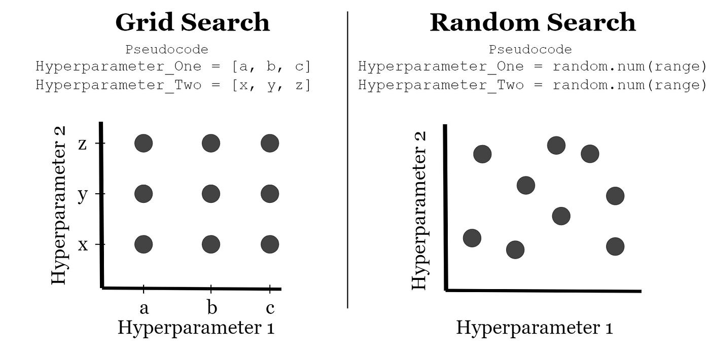
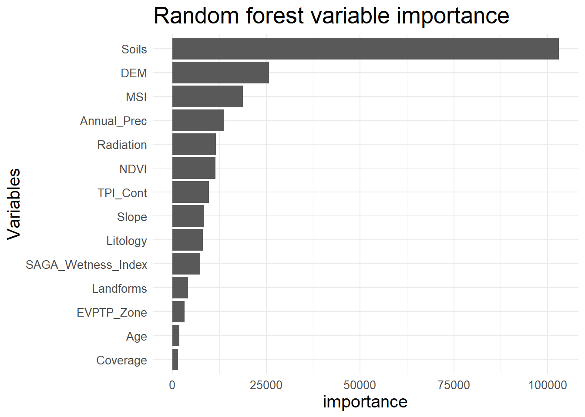
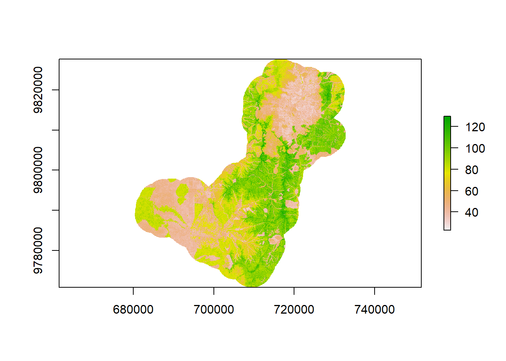
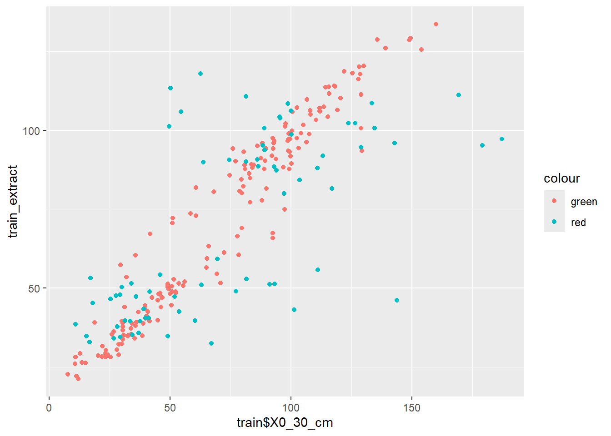
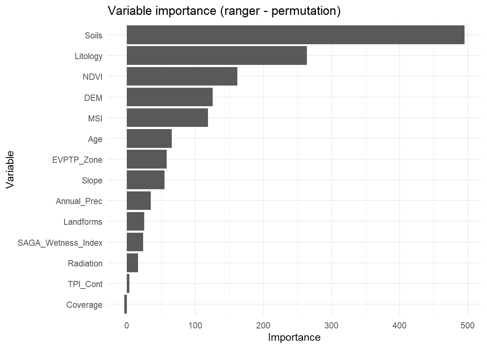

El modelo seleccionado para este ejercicio es el Random Forest o bosques aleatorios, al principal ventaja de este método es su precisión de predicción. En muchos conjuntos de datos funcionan mejor, que otros algoritmos de clasificación y regresión.
15.1 Entrenamiento y validación de los modelos
En el contexto de Machine Learning, el conjunto de entrenamiento (train) y el conjunto de prueba (test) son fundamentales para desarrollar y evaluar modelos predictivos.
Conjunto de Entrenamiento (Train): Es la porción de datos que se utiliza para entrenar el modelo. El modelo aprende a identificar patrones y hacer predicciones de acuerdo a la información proporcionada.
Conjunto de Prueba (Test): Es la porción de datos que se encarga de evaluar la eficiencia del modelo. Estos datos no se utilizan durante el entrenamiento y sirven para probar cómo el modelo puede generar nuevos datos.
Lo que se busca es que el modelo pueda predecir correctamente los resultados en datos desconocidos, esto indica su capacidad de generalización. Si el modelo presenta un rendimiento similar en ambos conjuntos, es probable que funcione bien con datos nuevos.
Sin embargo, si hay una gran discrepancia entre el rendimiento en el conjunto de entrenamiento y el de prueba, podría indicar un problema, como el sobreajuste (overfitting), donde el modelo aprende demasiado los detalles del conjunto de entrenamiento y pierde capacidad de generalizar.
15.2 Validación
La validación evalúa qué tan bien el modelo realizará predicciones con datos nuevos, es decir, datos que no se utilizaron durante el entrenamiento del modelo. Es importante para asegurar que el modelo sea generalizable y funcione bien con datos que no ha visto antes.
15.3 División de dataset
Se describirán algunas de las técnicas utilizadas para realizar las divisiones de donde se obtendrán las técnicas para validar el modelo:
15.3.1 Split simple
Esta técnica es comúnmente usada para dividir el conjunto de datos en dos subconjuntos: un conjunto de entrenamiento y un conjunto de prueba. Este proceso de división se realiza aleatoriamente, asegurando que ambos conjuntos representen la distribución general de los datos. La proporción común para la división es 80% para el conjunto de entrenamiento y 20% para el conjunto de prueba.
El Split simple se caracteriza por ser simple, eficiente y fácil de interpretar que proporciona una valiosa evaluación del modelo. Además, es un método computacionalmente eficiente que no requiere dividir el conjunto de datos en múltiples subconjuntos.
La validación cruzada (CV) es una técnica comúnmente utilizada para evaluar el rendimiento de un modelo y su capacidad para generalizar a datos invisibles. Implica dividir los datos disponibles en múltiples pliegues o subconjuntos, utilizar uno de estos pliegues como conjunto de validación y entrenar el modelo en los pliegues restantes. Este proceso se repite varias veces y cada pliegue sirve como conjunto de prueba exactamente una vez.
Dentro de las ventajas de la validación cruzada, se puede decir que evita el sobreajuste al usar datos invisibles para la evaluación. Y puede brindar una guía para la selección de los hiperparámetros óptimos del modelo.
El ajuste de modelos o tuning de hiperparámetros, es un proceso crucial para optimizar el rendimiento de un modelo entrenado. En donde se ajustan los valores de los hiperparámetros, que son configuraciones que controlan el comportamiento del algoritmo de aprendizaje.
El objetivo es encontrar la combinación de hiperparámetros que maximice la capacidad del modelo para generalizar bien a los nuevos datos no vistos durante el entrenamiento, para lograr un mejor rendimiento y generalización.
Los hiperparámetros son parámetros que son independientes del proceso de entrenamiento: el científico de datos los establece de antemano. Por ejemplo, en un bosque aleatorio, un hiperparámetro sería cuántos árboles incluir o cuántos nodos puede tener cada árbol. Los parámetros serían los criterios para cada nodo, que encuentra el proceso de entrenamiento para el bosque aleatorio.
Búsqueda de cuadrícula y búsqueda aleatoria
La búsqueda de cuadrícula es donde se selecciona x número de valores que están espaciados uniformemente a lo largo de cada eje. Esto forma una cuadrícula, de ahí el nombre. La búsqueda aleatoria es cuando se selecciona aleatoriamente un número de valores x cuadrado . Ambos casos generan un número de puntos x cuadrado .

15.5 Modelo seleccionado
15.5.1 Random Forest
Se realiza el modeloRandom Forest con cross validation para los 3 sets de datos que se seleccionaron previamente:
NoteLibrerías
# Libreriaslibrary(randomForest)
randomForest 4.7-1.2
Type rfNews() to see new features/changes/bug fixes.
library(ggplot2)
Attaching package: 'ggplot2'
The following object is masked from 'package:randomForest':
margin
library(purrr)library(caret)
Loading required package: lattice
Attaching package: 'caret'
The following object is masked from 'package:purrr':
lift
library(dplyr)
Attaching package: 'dplyr'
The following object is masked from 'package:randomForest':
combine
The following objects are masked from 'package:stats':
filter, lag
The following objects are masked from 'package:base':
intersect, setdiff, setequal, union
library(sf)
Linking to GEOS 3.13.0, GDAL 3.10.1, PROJ 9.5.1; sf_use_s2() is TRUE
library(SuperLearner)
Loading required package: gam
Loading required package: splines
Loading required package: foreach
Attaching package: 'foreach'
The following objects are masked from 'package:purrr':
accumulate, when
Loaded gam 1.22-7
Loading required package: nnls
Super Learner
Version: 2.0-42
Package created on 2026-09-14
library(MASS)
Attaching package: 'MASS'
The following object is masked from 'package:dplyr':
select
library(arm)
Loading required package: Matrix
Loading required package: lme4
arm (Version 1.15-4, built: 2026-11-07)
Working directory is C:/Users/CTIRADO/Documents/libro-dsm
NoteRandom forest con todas las covariables del estudio
# Cargar la base de datos data=data.frame(data_sf)[1:26]set.seed(2024) # Seleccionar la semilla de la divisióntrain_index <-createDataPartition(data$X0_30_c , p=0.7, list=FALSE) # Se divide el set de datos en entrenamiento basados en el index obtenidotrain <- data[train_index, ]test <- data[-train_index, ]set.seed(2024) # Definir el control que se tiene para el test train_control <-trainControl(method ="cv", # Cross-validationnumber =10, # Numero de foldersverboseIter =TRUE, # ProgresoallowParallel =TRUE# Permitir paralelización)# Definir parámetro gridparam_grid <-expand.grid(mtry =c(2, 3, 4), # Valores mtry ejemplontree =c(50, 100, 150) # Valores para arboles)set.seed(2024) # Entrenamiento con parametros del gridrf_model_grid_tun <- caret::train(data = train, # El dataset X0_30_cm ~ ., # Predictormethod ="rf", # Random Forest trControl = train_control, # Training control con gridsearch = param_grid,)
# Obtener el mejor modelo RFprint(rf_model_grid_tun)
Random Forest
176 samples
25 predictor
No pre-processing
Resampling: Cross-Validated (10 fold)
Summary of sample sizes: 157, 159, 158, 158, 159, 157, ...
Resampling results across tuning parameters:
mtry RMSE Rsquared MAE
2 26.17825 0.5449614 20.90940
13 24.68561 0.5859316 19.03582
25 23.93196 0.6109011 18.36027
RMSE was used to select the optimal model using the smallest value.
The final value used for the model was mtry = 25.
print(rf_model_random_tun)
Random Forest
176 samples
25 predictor
No pre-processing
Resampling: Cross-Validated (10 fold)
Summary of sample sizes: 157, 159, 158, 158, 159, 157, ...
Resampling results across tuning parameters:
mtry RMSE Rsquared MAE
2 26.20828 0.5439628 20.93545
4 25.74767 0.5513944 20.37924
7 25.30727 0.5672027 19.70000
9 25.00256 0.5720505 19.36839
12 24.73576 0.5829924 18.98297
14 24.54567 0.5875235 18.90215
17 24.31964 0.5986163 18.66429
19 24.23717 0.5988939 18.51369
22 24.18911 0.6010704 18.46498
25 24.13237 0.6044828 18.47850
RMSE was used to select the optimal model using the smallest value.
The final value used for the model was mtry = 25.
# Se definen lo mejores modelos obtenidos con cada tuning best_rf_grid_tun <- rf_model_grid_tun$finalModelbest_rf_grid_tun
Call:
randomForest(x = x, y = y, mtry = param$mtry, search = ..1)
Type of random forest: regression
Number of trees: 500
No. of variables tried at each split: 25
Mean of squared residuals: 559.3724
% Var explained: 58.17
Call:
randomForest(x = x, y = y, mtry = param$mtry, search = "random")
Type of random forest: regression
Number of trees: 500
No. of variables tried at each split: 25
Mean of squared residuals: 553.996
% Var explained: 58.57
NoteRandom forest con las covariables seleccionadas mediante VSURF
# Cargar la base de datos data= data[data_VSURF]set.seed(2024) # Seleccionar la semilla de la divisióntrain_index <-createDataPartition(data$X0_30_cm , p=0.7, list=FALSE) # Se divide el set de datos en entrenamiento basados en el index obtenidotrain <- data[train_index, ]test <- data[-train_index, ]set.seed(2024) # Definir el control que se tiene para el test train_control <-trainControl(method ="cv", # Cross-validationnumber =10, # Numero de folders para CVverboseIter =TRUE, # Imprimir procesoallowParallel =TRUE# Permitir paralelización)# Definir parámetro gridparam_grid <-expand.grid(mtry =c(2, 3, 4), # Valores seleccionados para mtryntree =c(50, 100, 150) # Valores seleccionados para numero de árboles)set.seed(2024) # Entrenamiento con parametros del gridrf_model_grid_tun_VSURF <- caret::train(data = train, # Dataset X0_30_cm ~ ., # Variable predictoramethod ="rf", # Random Forest trControl = train_control, # Control de entrenamiento con gridsearch = param_grid,)
# Obtener el mejor modelo RFprint(rf_model_grid_tun_VSURF)
Random Forest
176 samples
6 predictor
No pre-processing
Resampling: Cross-Validated (10 fold)
Summary of sample sizes: 157, 159, 158, 158, 159, 157, ...
Resampling results across tuning parameters:
mtry RMSE Rsquared MAE
2 29.94161 0.3521165 24.64462
4 30.21423 0.3356487 24.74505
6 30.50577 0.3251184 24.87548
RMSE was used to select the optimal model using the smallest value.
The final value used for the model was mtry = 2.
print(rf_model_random_tun_VSURF)
Random Forest
176 samples
6 predictor
No pre-processing
Resampling: Cross-Validated (10 fold)
Summary of sample sizes: 157, 159, 158, 158, 159, 157, ...
Resampling results across tuning parameters:
mtry RMSE Rsquared MAE
2 29.77279 0.3580875 24.44176
3 29.98919 0.3458758 24.64429
4 30.27384 0.3337357 24.80372
5 30.58077 0.3210423 25.03677
6 30.68349 0.3183775 24.95133
RMSE was used to select the optimal model using the smallest value.
The final value used for the model was mtry = 2.
# Se definen lo mejores modelos obtenidos con cada tuning best_rf_grid_tun_VSURF <- rf_model_grid_tun_VSURF$finalModelbest_rf_grid_tun_VSURF
Call:
randomForest(x = x, y = y, mtry = param$mtry, search = ..1)
Type of random forest: regression
Number of trees: 500
No. of variables tried at each split: 2
Mean of squared residuals: 891.7648
% Var explained: 33.31
Call:
randomForest(x = x, y = y, mtry = param$mtry, search = "random")
Type of random forest: regression
Number of trees: 500
No. of variables tried at each split: 2
Mean of squared residuals: 907.7233
% Var explained: 32.12
NoteRandom Forest con las covariables seleccionadas mediante VIF
NoteValidación del modelo
Se prueba el modelo con un set de datos que no conce, estos datos fueron separados inicialmente. Y el modelo es aquel seleccionado anteriormente:
#Se obtiene la importancia de las variablesvar_imp <-varImp(best_rf_random_tun_VIF, scale=FALSE)var_imp <-data.frame(variables=row.names(var_imp), importance=var_imp$Overall)#Se grafican para entender cúal está influyendo más en el modelovar_imp %>%arrange(importance) %>%ggplot(aes(x=reorder(variables, importance), y=importance)) +geom_bar(stat='identity') +coord_flip() +xlab('Variables') +labs(title='Random forest variable importance') +theme_minimal() +theme(axis.text =element_text(size =10), axis.title =element_text(size =15), plot.title =element_text(size =20),)

#Evaluar el desempeno del modelo con el set de entrenamiento #Los datos en formato ráster servirán para que la predicción ahora no sea numérica sino en formato rásterlista_raster=list.files(path ="datos/covariables", pattern =".tif", full.names =TRUE)raster_stack=stack(lista_raster)#Se predice utiliando el RF elegido y el stack de los rasterX0_30_cm_pred <-predict(object = raster_stack[[data_VIF]], model = best_rf_random_tun_VIF)*1#Se visualiza la predicción realizadaplot(X0_30_cm_pred)plot(train["X0_30_cm"], add =TRUE)

#Se extraen los puntos donde los datos de entrenamiento y de prueba se cruzan en el mapa predichotrain_extract = raster::extract(x = X0_30_cm_pred, y = train_sf)test_extract = raster::extract(x = X0_30_cm_pred, y = test_sf)#Se tabulan los valores predichos y los valores de materia orgánica reales que se dividieron en el set de entrenamiento y pruebaval_train_data =cbind(train["X0_30_cm"], predicho = train_extract)val_test_data =cbind(test["X0_30_cm"], predicho = test_extract)#Se obtienen las métricas de validación para el set de entrenamientotrain.R2 =round(R2(train$X0_30_cm, train_extract),3)train.RMSE =round(RMSE(train$X0_30_cm, train_extract))train.MAE =round(MAE(train$X0_30_cm, train_extract))#Se obtienen las métricas de validación para el set de pruebatest.R2 =round(R2(test$X0_30_cm, test_extract),3)test.RMSE =round(RMSE(test$X0_30_cm, test_extract))test.MAE =round(MAE(test$X0_30_cm, test_extract))#Se visualizan las métricasTrain_metrics =c(R2 = train.R2, RMSE = train.RMSE, MAE = train.MAE) # R2, RMSE, MAETest_metrics =c(R2 = test.R2, RMSE = test.RMSE, MAE = test.MAE) # R2, RMSE, MAETrain_metrics
R2 RMSE MAE
0.933 10.000 8.000
Test_metrics
R2 RMSE MAE
0.434 32.000 23.000
# Crear un ggplot comparanda los valores predichos con los datos de entrenamiento y pruebaggplot()+geom_point(aes(x = train$X0_30_cm, y = train_extract, color ="green"), data =train) +geom_point(aes(x = test$X0_30_cm, y = test_extract, color ="red"), data = test)

15.6 Quantile Regression Forest
El Quantile Regression Forest (QRF) es una extensión del algoritmo Random Forest que no solo predice un valor promedio (como lo hace un Random Forest tradicional), sino que además permite estimar la distribución completa de la variable respuesta. Esto quiere decir que QRF puede calcular cuantiles (por ejemplo, el 5%, 50% o 95%), proporcionando información sobre incertidumbre, rangos de valores posibles y extremos.
A diferencia del Random Forest clásico, que entrega una única predicción basada en los promedios de los árboles, el QRF conserva todas las observaciones de las hojas terminales donde caen los datos, lo que permite reconstruir una distribución empírica para cada predicción.
NoteLibrerías
# Librerías necesariaslibrary(ranger)
Warning: package 'ranger' was built under R version 4.4.3
Attaching package: 'ranger'
The following object is masked from 'package:randomForest':
importance
Warning: package 'tidyr' was built under R version 4.4.3
Attaching package: 'tidyr'
The following object is masked from 'package:raster':
extract
The following objects are masked from 'package:Matrix':
expand, pack, unpack
Sets de entrenamiento y prueba
Para realizar entrenar y testear el modelo, debe definir que cantidad de datos utilizará para entrenar su modelo y seleccionarlos.
NoteDefinir sets
# Para entrenar / testear usaremos el set VIF (ajusta si quieres VSURF u otro)data =data.frame(data_sf)[ , data_VIF]# quitar filas con NA en predictora o covariablesdata = data %>%drop_na()#Partición de datosset.seed(2025)train_index <-createDataPartition(data$X0_30_cm, p =0.7, list =FALSE)train <- data[train_index, ]test <- data[-train_index, ]
Luego se definen los parámetros del modelo, aquí se puede definir los parámetros mtry, ntree y min.node.size:
mtry Es el número de variables predictor que el modelo selecciona aleatoriamente en cada división del árbol. Este parámetro controla la diversidad entre los árboles del bosque. Valores pequeños generan árboles más distintos entre sí, mientras que valores más grandes producen árboles más similares y con mayor ajuste, aunque con riesgo de sobreajuste.
Se mueve entre 1 y el número total de variables predictor del modelo.
ntree Corresponde al número total de árboles que se construyen en el bosque. Un mayor número de árboles mejora la estabilidad de las predicciones y reduce la varianza del modelo, especialmente en la estimación de cuantiles. Sin embargo, aumentar demasiado este número incrementa también el tiempo de cómputo.
Puede variar entre 100 y 2000 árboles.
Rangos prácticos más comunes:
100–500 → más rápido, buen desempeño general.
500–1000 → mayor estabilidad en cuantiles y menor varianza.
+1000 → solo cuando se necesita alta estabilidad (por ejemplo, mapas espaciales grandes o cuantiles extremos).
min.node.size Representa el tamaño mínimo que debe tener un nodo terminal en cada árbol. Este parámetro controla la profundidad y complejidad del árbol. Valores más pequeños permiten árboles más detallados y profundos, mientras que valores más grandes producen árboles más simples y generalistas.
Afecta la profundidad del árbol y se mueve normalmente entre 1 y 20.
Rangos más usados:
1–5 → árboles más detallados (común en regresión).
5–10 → árboles más simples y generalistas.
Valores → 10 se usan cuando se quiere evitar sobreajuste en datasets pequeños.
NoteDefinir parámetros
# --- Grid manual para Quantile RF ---# Valores que se evaluarán para mtry (número de variables por división)mtry_vals <-c(3,4,6)# Valores que se evaluarán para ntree (número de árboles del bosque)ntree_vals <-c(100, 300, 500)# Valor a evaluar para min.node.size (tamaño mínimo de los nodos terminales)min.node.size_vals <-c(5)# Se crea un data frame con todas las combinaciones posibles de parámetrosresults <-expand.grid(mtry = mtry_vals,num.trees = ntree_vals,min.node.size = min.node.size_vals)# Columnas vacías para almacenar desempeño del modeloresults$RMSE_oob <-NA# Error estimado OOBresults$RMSE_test <-NA# Error sobre datos de prueba (más confiable)
Con los parámetros establecidos podemos entrenar el modelo realizando una búsqueda óptima dentro de lo establecido. Se predice en el conjunto de prueba para obtener las métricas.
NoteModelo óptimo
# Bucle que recorre cada combinación del gridfor(i inseq_len(nrow(results))){# Extrae los valores de parámetros para la iteración actual mtry_i <- results$mtry[i] ntree_i <- results$num.trees[i] mn_i <- results$min.node.size[i]# Para asegurar reproducibilidadset.seed(2025)# Entrena el modelo Quantile Regression Forest rf_q <-ranger(formula = X0_30_cm ~ ., # Variable respuesta y predictoresdata = train, # Datos de entrenamientonum.trees = ntree_i, # Número de árbolesmtry = mtry_i, # Número de variables por divisiónmin.node.size = mn_i, # Tamaño mínimo del nodo terminalimportance ="permutation", # Importancia de variablesquantreg =TRUE, # Activa QRF para cuantilesrespect.unordered.factors ="order", # Manejo de factoresseed =2025)# Predicción en el conjunto de prueba pred_test <-predict(rf_q, data = test, type ="response")$predictions# Cálculo del RMSE en test (métrica principal de evaluación) results$RMSE_test[i] <-sqrt(mean((test$X0_30_cm - pred_test)^2, na.rm =TRUE))# Obtención del error OOB si está disponible (ranger suele devolver MSE)if(!is.null(rf_q$prediction.error)){ results$RMSE_oob[i] <-sqrt(rf_q$prediction.error) } else { results$RMSE_oob[i] <-NA }# Imprime el avance del procesocat(sprintf("Iter %d/%d: mtry=%d, ntree=%d -> RMSE_test=%.4f\n", i, nrow(results), mtry_i, ntree_i, results$RMSE_test[i]))}
Iter 1/9: mtry=3, ntree=100 -> RMSE_test=29.5932
Iter 2/9: mtry=4, ntree=100 -> RMSE_test=29.1170
Iter 3/9: mtry=6, ntree=100 -> RMSE_test=30.1470
Iter 4/9: mtry=3, ntree=300 -> RMSE_test=29.4141
Iter 5/9: mtry=4, ntree=300 -> RMSE_test=29.4746
Iter 6/9: mtry=6, ntree=300 -> RMSE_test=29.6902
Iter 7/9: mtry=3, ntree=500 -> RMSE_test=29.4103
Iter 8/9: mtry=4, ntree=500 -> RMSE_test=29.7090
Iter 9/9: mtry=6, ntree=500 -> RMSE_test=29.7100
De las metricas obtenidas en el modelo luego de predecir con el conjunto de prueba, se elige el “MEJOR” modelo.
NoteSelección de modelo
# Elegir el mejor por menor RMSE en testbest_row <- results[which.min(results$RMSE_test), ]best_row
Se reentrena el modelo con los parámetros definidos como óptimos.
NoteEntrenar modelo final
# Re-entrenar el mejor modelo con todos los datos de entrenamiento usando los hiperparámetros seleccionadosset.seed(2025)best_qrf <-ranger(formula = X0_30_cm ~ .,data = train,num.trees =100,mtry =4,min.node.size =5,importance ="permutation",quantreg =TRUE,respect.unordered.factors ="order",seed =2025)#Para guardar este modelo:saveRDS(best_qrf, file ="salidas/best_qrf.rds")
Se predice con los datos sobre ambos datasets
NotePredicción de los datos
# --- Evaluación en train y test usando predicción de la media (type='response') ---pred_train_mean <-predict(best_qrf, data = train, type ="response")$predictionspred_test_mean <-predict(best_qrf, data = test, type ="response")$predictions# Si quieres también obtener cuantiles (ej. median 0.5 y 0.025/0.975)pred_test_q50 <-predict(best_qrf, data = test, type ="quantiles", quantiles =0.5)$predictionspred_test_q005 <-predict(best_qrf, data = test, type ="quantiles", quantiles =0.005)$predictionspred_test_q095 <-predict(best_qrf, data = test, type ="quantiles", quantiles =0.095)$predictions
Se calculan las métricas de los datos predichos y la importancia de las variables
NoteValidación del modelo e importancia de las variables
# Importancia de variables (permutation importance)var_imp <-as.data.frame(best_qrf$variable.importance)colnames(var_imp) <-"importance"var_imp$variable <-rownames(var_imp)var_imp <- var_imp %>%arrange(desc(importance))ggplot(var_imp, aes(x =reorder(variable, importance), y = importance)) +geom_bar(stat ="identity") +coord_flip() +theme_minimal() +labs(title ="Variable importance (ranger - permutation)", x ="Variable", y ="Importance")

Ahora se hace la predicción pero sobre el stack de las covariables, es importante omitir los valores NA y asegurarse que no entren a la predicción
NotePredicción del ráster
# -------------------------------------------------# Predicción sobre el stack de covariables (raster)# -------------------------------------------------# Cargar stack de covariableslista_raster =list.files(path ="datos/covariables", pattern =".tif$", full.names =TRUE)raster_stack =stack(lista_raster)# Asegúrar que las capas necesarias estén presentes y en el mismo orden que las columnas predictoras del modelo# Se seleccionan solo las capas que coinciden con los nombres de covariablescovariate_names <-setdiff(data_VIF, "X0_30_cm")# Se reordenan y seleccionanavailable_names <-names(raster_stack)missings <-setdiff(covariate_names, available_names)if(length(missings) >0){stop("Faltan capas en el raster_stack para: ", paste(missings, collapse =", "))}raster_stack_sel <- raster_stack[[covariate_names]]# Extraer valores (por bloques para memoria si dataset grandevals <-as.data.frame(values(raster_stack_sel))# Mantener NA rows para reconstruir rasteridx_na <-apply(vals, 1, function(x) any(is.na(x)))# Predecir por bloques: predict.ranger espera data frame con columnas iguales a las usadas en entrenamiento# Ojo: si hay factores, hay que convertir niveles coherentespreds_mean <-rep(NA_real_, nrow(vals))non_na_idx <-which(!idx_na)if(length(non_na_idx)>0){ pred_batch <-predict(best_qrf, data = vals[non_na_idx, ], type ="response")$predictions preds_mean[non_na_idx] <- pred_batch}# Crear raster de salida (se utiliza la primera capa como template)pred_raster <- raster_stack_sel[[1]]values(pred_raster) <- preds_mean
Se guarda el ráster obtenido y también se pueden calcular las métricas del mismo.
NoteMetricas de ráster
# Guardar o plotearplot(pred_raster, main ="Predicción QRF - media (X0_30_cm)")